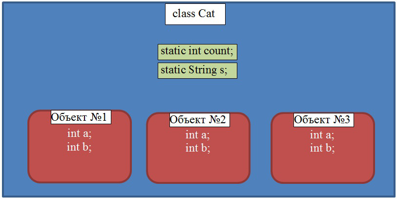

— В примере выше у нас объявлен класс Cat, у которого есть 4 переменные: a,b,s – обычные, а count – статическая. Если создать несколько объектов такого класса (например, 3 шт.), то каждый из них будет содержать свою собственную копию обычных переменных класса. Статическая же переменная – общая на всех. Формально она даже не находится внутри этих объектов, т.к. существует даже тогда, когда ни одного объекта класса Cat создано не было.
— Вот что произойдет, если мы объявим переменную s статической:

— Ага. Вроде понятно.
— А можно объявить одинаковые переменные?
— В методе — нет. Все переменные, объявленные внутри метода, должны иметь уникальные имена. Аргументы метода также считаются его переменными.
— А как насчёт переменных класса?
— Переменные класса тоже должны быть уникальными в рамках каждого конкретного класса.
Но есть исключение – имена переменных метода и переменных класса могут совпадать.
— А если мы в коде изменяем переменную, а таких переменных две, какая будет изменяться?
— Если в методе видны (доступны) несколько переменных, например, переменная класса и переменная метода, то тогда обращение произойдет к переменной метода.
Пример с двумя переменными count
class Main
{
public int count = 0; //объявили переменную класса
public void run()
{
count = 15; //обращение к переменной класса
int count = 10; //объявили локальную переменную метода
count ++; //обращение к переменной метода
}
}
— В этом коде объявлены две переменных count. В строке 3 объявлена переменная класса, а в строке 8 – переменная метода.
— Когда метод run будет исполняться, то произойдет вот что:
— В строке 8 мы обращаемся к переменной класса и присваиваем ей значение 15
— В строке 9 объявляется (создается) новая переменная метода – count. Она закрывает собой переменную класса. Любой дальнейший код в методе будет видеть (обращаться) именно к переменной метода.
— Понятно.
— Переменная метода закрывает собой переменную класса. Т.е. обращение будет происходить к переменной метода. Но к переменной класса тоже можно обратиться, только более сложным способом.
|
Статическая переменная класса ClassName.variableName //Примеры: Cat.catsCount |
Обычная переменная класса this.variableName //Примеры: this.catsCount |
— А что ещё за статические методы и статические переменные?
— Статические методы и переменные привязаны не к объектам класса, а непосредственно к самому классу. Т.е. если мы создадим 10 объектов класса Variables из примера в самом начале уровня, у нас будет 10 переменных classVariable (по одной на каждый объект) и всего одна общая переменная TEXT.
— У меня тут вопрос.
— А чем отличаются статические и нестатические методы?
— Давай рассмотрим, как работает обычный нестатический метод:
|
Как выглядит код Cat cat = new Cat(); String name = cat.getName(); cat.setAge(17); cat.setChildren(cat1, cat2, cat3); |
Что происходит на самом деле Cat cat = new Cat(); String name = Cat.getName(cat); Cat.setAge(cat,17); Cat.setChildren(cat, cat1, cat2, cat3); |
— При вызове метода в виде «объект» точка «имя метода», на самом деле вызывается метод класса, в который первым аргументом передаётся тот самый объект. Внутри метода он получает имя this. Именно с ним и его данными происходят все действия.
— Нифига себе. Так вот как, оказывается, оно все работает!
— А вот как работает статический метод:
|
Как выглядит код Cat cat1 = new Cat(); Cat cat2 = new Cat(); int catCount = Cat.getAllCatsCount(); |
Что происходит на самом деле Cat cat1 = new Cat(); Cat cat2 = new Cat(); int catCount = Cat.getAllCatsCount(null); |
— При вызове статического метода, никакого объекта внутрь не передаётся. Т.е. this равен null, поэтому статический метод не имеет доступа к нестатическим переменным и методам (ему нечего передать в такие методы в качестве this).
— Хм. Вроде понятно. Хотя как-то поверхностно.
— А вот и дядя Диего… С его задачками.